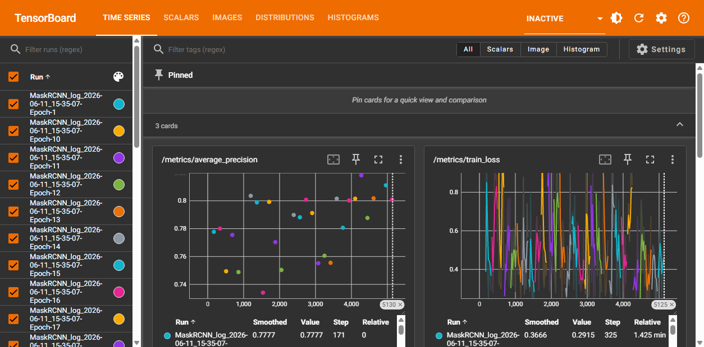
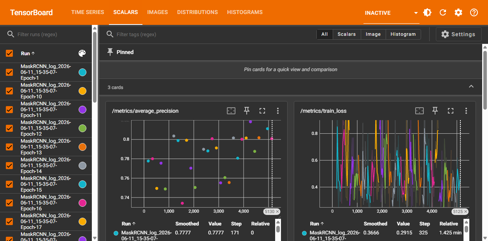
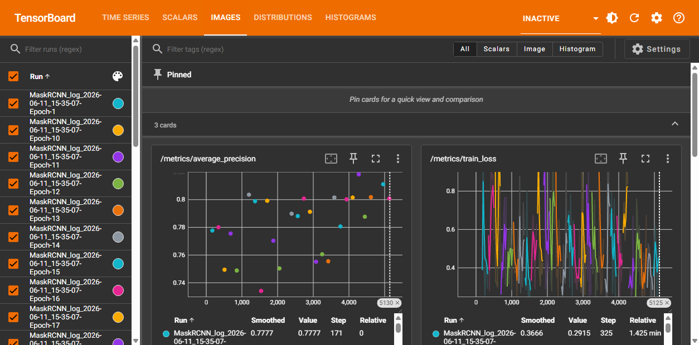
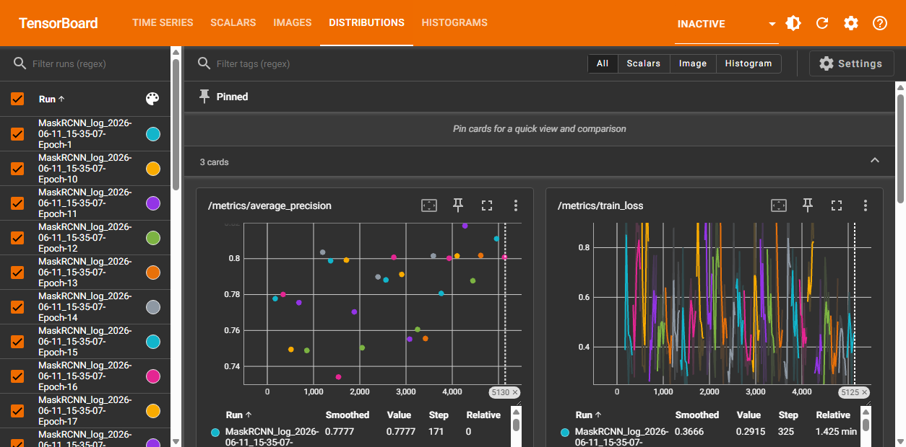
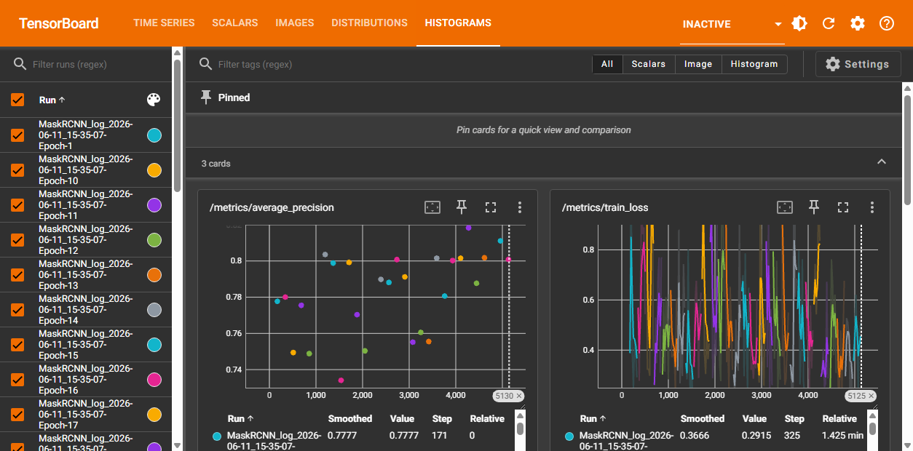

TensorBoard Archive Dashboard
Archive root: .\samples\demo
Last updated: 2026-06-15
Table One
| Folder name | Training note | Command to run | Dashboard URL | Double-click launcher |
|---|---|---|---|---|
| archive | SolarPanel_Finetuned_v01_1000Labels_ucheck Run2 - Stop when model stops improving - CONTINUE_TRAINING. | powershell -NoProfile -ExecutionPolicy Bypass -File ".\samples\demo\archive\start.ps1" |
http://localhost:6015/?darkMode=true#timeseries | .\samples\demo\open-demo.bat |
How Each Archive Is Created
| 1. Source | The tool asks for the temporary TensorBoard URL created by ArcGIS Pro while training with TensorBoard enabled. |
| 2. Discovery | It reads TensorBoard API endpoints such as /data/environment, /data/runs, and /data/plugins_listing. |
| 3. Copy | It copies the TensorBoard training_log event files reported by the live site. |
| 4. Relaunch | It creates PowerShell and batch launchers that run TensorBoard from the copied event files on a local port. |
| 5. Verification | It compares source and copied dashboard behavior, including runs and enabled plugins/tabs. |
| 6. Documentation | It writes the manifest, verification report, ZIP backup, SHA-256 checksum, and this dashboard index. |
Tech Stack In Backend
| ArcGIS Pro | Creates the original temporary TensorBoard site from the Image Analyst deep learning training workflow. |
| TensorBoard 2.20.0 | Serves the copied event files as the same interactive dashboard experience. |
| PowerShell | Copies archives, creates launchers, verifies files, manages ports, and refreshes documentation. |
| Event files | TensorBoard events.out.tfevents* files provide the runs, charts, images, distributions, and histograms. |
| Windows junction | Launchers serve logs through a short temporary path so long archive paths do not hide TensorBoard tabs. |
| Localhost port | The copied dashboard runs locally, for example http://localhost:6015/?darkMode=true#timeseries. |
| ZIP + SHA-256 | Each archive can be backed up and checked later using a generated ZIP file and checksum. |
Screenshots Of Each Tab Of The Output
Captured from the real sample TensorBoard archive running from copied event files. 31 runs verified
#timeseries
#scalars
#images
#distributions
#histograms